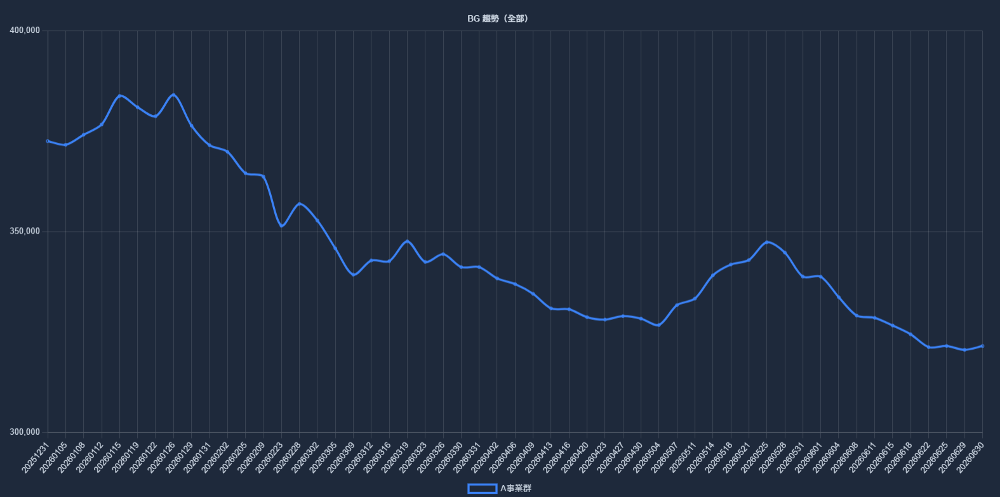
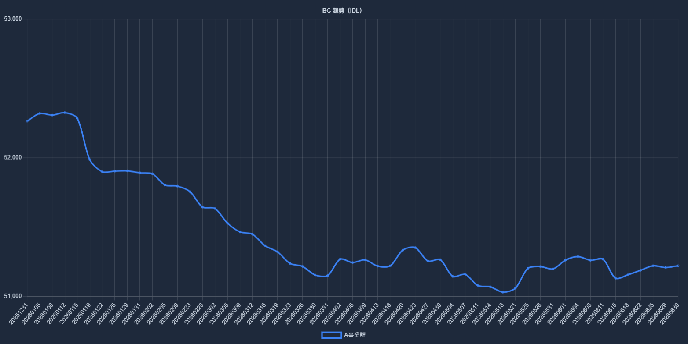
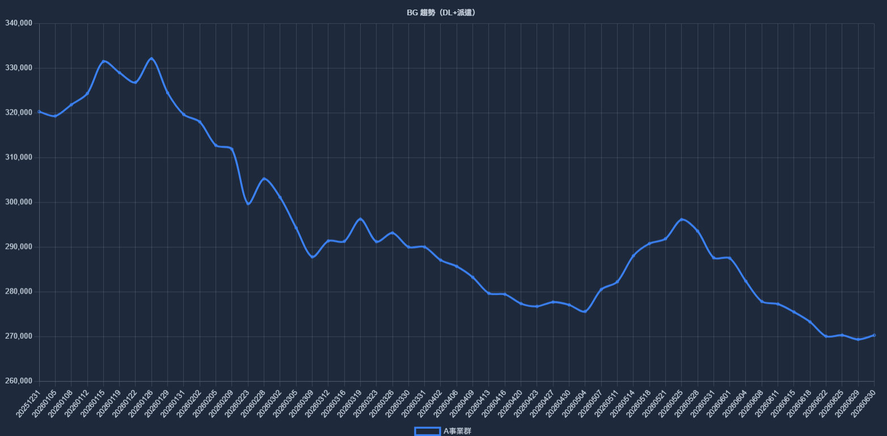

全員assets/全員.png

分為兩個功能區塊：一、A事業群三張人力趨勢圖總覽；二、ABG 基礎資訊轉換成「正職（IDL+DL） vs 派遣」人力變化。兩區塊說明可分別存入 GitHub 不同資料夾。
三張趨勢圖放在 assets；右側期初 / 期末人數會優先對照 data/abg-base-headcount.csv 自動帶入，也可手動覆寫。



預設讀取 data/abg-base-headcount.csv；若你臨時上傳 Excel / CSV，也會依同樣規則即時重繪。
支援欄位：日期、總人數、IDL、DL、派遣。系統會自動計算「正職 = IDL + DL」，並與派遣比較。